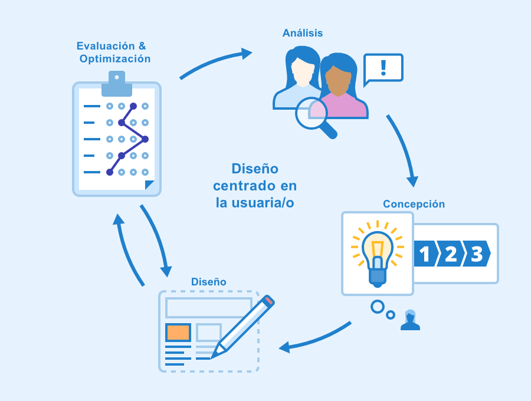
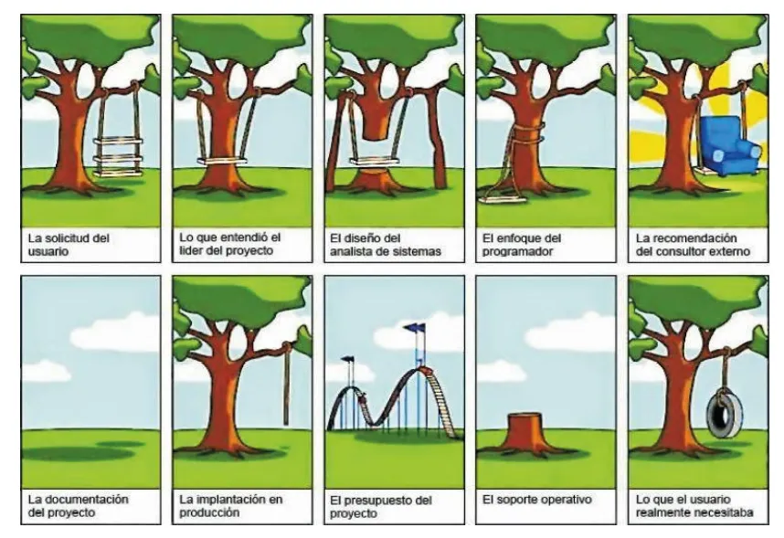

CONCEPTOS PREVIOS SOBRE EL DESARROLLO DE APLICACIONES WEB
Fundamentos para comprender correctamente el desarrollo web
Arquitectura Cliente-Servidor
La arquitectura cliente servidor tiene dos partes claramente diferenciadas, por un lado,
la parte del servidor y por otro la parte de cliente o grupo de clientes.
En esta arquitectura el cliente suele ser estaciones de trabajo que solicitan
varios servicios al servidor, mientras que un servidor es una máquina que actúa
como depósito de datos y funciona como un sistema gestor de base de datos,
este se encarga de dar la respuesta demandada por el cliente.
Diseño centrado en el usuario

El diseño centrado en el usuario (DCU) es una metodología que se enfoca en el usuario
y sus necesidades durante todo el proceso de diseño. Esto significa que se tiene en cuenta
la experiencia del usuario en cada paso del diseño, desde la conceptualización hasta la implementación.
¿Como se implementa? Se realiza una investigación exhaustiva para conocer las necesidades y expectativas del usuario,
esto se logra mediante entrevistas o encuestas. Una vez que se ha recopilado la información necesaria, se procede
a crear prototipos y hacer pruebas con los usuarios para evaluar la usabilidad y eficacia del diseño. Esto se hace porque
el diseño centrado en el usuario es un proceso iterativo y continuo. Se trata de ir mejorando el diseño en base
a los comentarios y sugerencias de los usuarios, para así lograr una experiencia digital cada vez más satisfactoria y efectiva.
Por último, el diseño centrado en el usuario se integra con la analítica web para medir el éxito y el impacto del diseño en los usuarios.
Importancia de la Investigación en el Entorno para el Análisis de Requisitos

Es fundamental una investigación del entorno en el que se realiza el proyecto para evitar errores costosos a lo largo de este
y asi garantizar la calidad del software. Este proceso permite que ambas partes lleguen a un acuerdo sobre las expectativas buscadas
y como plasmarlas en la construcción de un producto de software.
Referencias
Canal, P. (2023, 4 de mayo). ¿Qué es el diseño centrado en el usuario?. IEBS Business School.
Palli, A. (2023, 17 de octubre). La importancia del análisis de requerimientos en el desarrollo de software. Proefex Peru.
Reactive Programming. (s. f.). Arquitectura Cliente-Servidor. ReactiveProgramming.io.